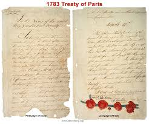

The origins of the American Revolution can be traced to a combination of political, economic, and ideological factors that developed over several decades. Tensions began to rise in the aftermath of the French and Indian War (1754–1763), as Britain sought to manage its massive war debt by taxing its American colonies. Measures such as the Sugar Act (1764), Stamp Act (1765), and Townshend Acts (1767) imposed new taxes and regulations on the colonies, sparking widespread resentment. Colonists objected to "taxation without representation," arguing that they should not be taxed by a Parliament in which they had no elected representatives.
The British government further angered colonists by asserting its authority through measures like the Quartering Act, which required colonists to house British soldiers, and the Declaratory Act (1766), affirming Parliament's right to legislate for the colonies "in all cases whatsoever." Tensions escalated with the passage of the Tea Act (1773), which led to the Boston Tea Party, a dramatic act of protest in which colonists dumped British tea into Boston Harbor. Britain responded with the Coercive Acts (1774), known to the colonists as the Intolerable Acts, which included punitive measures such as closing Boston Harbor and restricting colonial self-governance.
These actions, combined with the growing influence of Enlightenment ideas about liberty, natural rights, and the social contract, galvanized resistance among the colonies. Groups like the Sons of Liberty organized protests, while colonial leaders called for unity and collective action. The First Continental Congress convened in 1774 to coordinate a response, leading to a colonial-wide boycott of British goods. The breakdown in relations ultimately resulted in armed conflict at Lexington and Concord in April 1775, marking the beginning of the Revolutionary War. The origins of the Revolution thus lay in the complex interplay of British policies, colonial grievances, and the colonies’ evolving sense of identity and rights.
The American Revolution featured several major battles that significantly influenced its outcome. The Battle of Bunker Hill in June 1775, though a British victory, demonstrated the determination of the colonial forces and revealed that defeating the Americans would not be easy. In August 1776, the Battle of Long Island, the largest battle of the war, resulted in a decisive British victory and forced General George Washington and the Continental Army to retreat, highlighting British military strength early in the conflict. A turning point came with the Battle of Saratoga in the fall of 1777, where American forces defeated British General John Burgoyne’s army. This victory convinced France to join the war as an ally, providing essential military and financial support. In January 1781, the Battle of Cowpens in the Southern Campaign showcased brilliant American strategy, as General Daniel Morgan’s forces decisively defeated a larger British contingent. The final major battle occurred at Yorktown in the fall of 1781, where American and French forces, led by General George Washington and General Rochambeau, besieged British General Cornwallis’s army. The British surrender at Yorktown effectively ended the war and secured American independence. These key battles not only shaped the military trajectory of the Revolution but also bolstered colonial morale, secured vital international alliances, and paved the way for the formation of the United States.
Formal peace negotiations began in 1782, involving American representatives Benjamin Franklin, John Jay, and John Adams. The resulting Treaty of Paris was signed on September 3, 1783, and ratified by the United States Congress the following year. The Treaty of Paris marked the official conclusion of the American Revolution and began a period of immense change and uncertainty. For the United States, the treaty secured international recognition and expansive territory, but it also left the young nation with significant challenges. The Articles of Confederation, the country’s first governing document, proved inadequate in addressing issues such as interstate commerce, taxation, and foreign policy. These weaknesses ultimately led to the Constitutional Convention of 1787, where the U.S. Constitution was drafted, providing a stronger framework for governance.